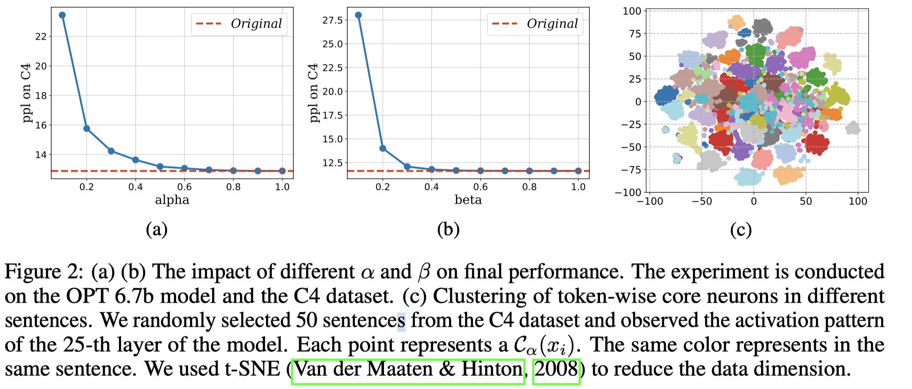

CoreInfer: Accelerating Large Language Model Inference with Semantics-Inspired Adaptive Sparse Activation

Abstract
Large language models (LLMs) with billions of parameters have sparked a new wave of exciting AI applications. However, their high computational costs and memory demands during inference pose significant challenges. Adaptive sparse activation inference, which activates only a small number of neurons for each token, offers a novel way to accelerate model inference without degrading performance, showing great potential for resource-constrained hardware devices. Nevertheless, existing methods predict activated neurons based on individual tokens with additional MLP, which involve frequent changes in activation maps and resource calls, limiting the acceleration benefits of sparse activation. In this paper, we introduce CoreInfer, an MLP-free adaptive sparse activation inference method based on sentence-level prediction. Specifically, we propose the concept of sentence-wise core neurons, which refers to the subset of neurons most critical for a given sentence, and empirically demonstrate its effectiveness. To determine the core neurons, we explore the correlation between core neurons and the sentence's semantics. Remarkably, we discovered that core neurons exhibit both stability and similarity in relation to the sentence's semantics -- an insight overlooked by previous studies. Building on this finding, we further design two semantic-based methods for predicting core neurons to fit different input scenarios. In CoreInfer, the core neurons are determined during the pre-filling stage and fixed during the encoding stage, enabling zero-cost sparse inference. We evaluated the model generalization and task generalization of CoreInfer across various models and tasks. Notably, on an NVIDIA TITAN XP GPU, CoreInfer achieved a 10.33 times and 2.72 times speedup compared to the Huggingface implementation and PowerInfer, respectively.
之前工作对activation sparse的预测是按照token-wise来做的，这样有几个问题： - Irregular and frequent resource calls during decoding - Additional computation costs during decoding; 使用MLP作为predictor带来的计算开销不能忽略
CoreInfer 则提出sentence-wise activation sparsity方式，并且没有MLP的predictor。
定义如下： - Token-wise Core Neurons. - 每个token经过一个layer计算后，对应多个输出（neurons）,取绝对值最大的几个作为Core Neurons。 - Sentence-wise Core Neurons. - 一个sentence含有多个token，每个token都可以根据以上一定找到core neurons，通过统计每个neuron作为token-wise core neuron的次数，次数最多的几个作为sentence-wise core neurons。
{kind=link}
{kind=link}
可以看到分别引入了 两个超参数，用来控制core neurons的比例。
 通过这种选择策略，只用计算少部分的neurons，便可以维持精度。
{kind=link}
另外观察，越临近的tokens的core neurons越相似，所以具有语义相似性。
所以，coreinfer根据历史的core neuron来判断未来的core neuron方法如下： - Stability-guided Prediction，prefill阶段统计，decoding阶段直接使用prefill的统计结果 - Similarity-guided Prediction，coreinfer 统计了training data，并按照语义对其进行了聚类，从而可以根据语义相关性来判断core neuron （有些抽象）
第一种思想和aggregated sparsity很像，LLM in a flash.